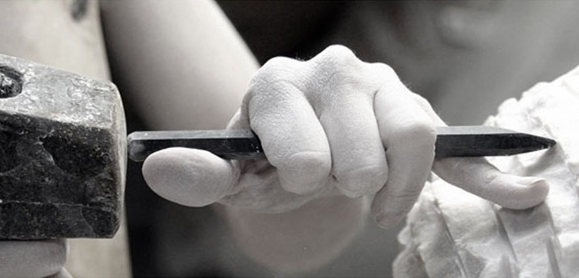

Il marmo è stato ampiamente utilizzato sin dall'antichità come materiale per la scultura e per l'architettura. Il basso indice di rifrazione della calcite, di cui è principalmente composto, permette alla luce di "penetrare" nella superficie della pietra prima di essere riflessa, e conferisce a questo materiale una speciale luminosità,
Il termine "marmo" deriva dal greco marmaros, con il significato di "pietra splendente", e serviva ad indicare qualsiasi pietra "lucidabile", ossia la cui superficie poteva essere fatta diventare lucida mediante levigatura.

I marmi sono prevalentemente composti di carbonato di calcio (per cui sono anche detti carbonati) mentre i graniti sono principalmente composti da ossido di silicio (per cui sono detti anche silicati). Le caratteristiche fisiche e chimiche dei graniti sono quindi molto diverse da quelle dei marmi e per questo motivo i campi di applicazione di questi materiali devono essere scelti con oculatezza. Come regola di base è preferibile utilizzare i marmi per interni, mentre i graniti possono essere impiegati anche in esterno. Anche le tecniche di lavorazione dei materiali lapidei sono influenzate dalla loro composizione.
Il marmo ha una natura calcarea (è costituito da carbonato di calcio), ha una durezza non elevata (circa 3-4 della Scala Mohs), reagisce facilmente con gli acidi anche deboli (es. aceto, succo di limone, ecc.) ed è facilmente lucidabile e lavorabile. La presenza di altre sostanze (anche in piccola quantità) da origine a venature e colorazioni tipiche. Il granito ha una natura silicea (è costituito da una miscela complessa di silice e di silicati), ha una maggiore durezza (circa 6-7 della Scala Mohs), non reagisce con gli acidi anche forti (as. acido cloridrico), è lucidabile con maggiore difficoltà, ha struttura granulare compatta e può assumere varie colorazioni in relazione agli agenti pigmentanti contenuti.